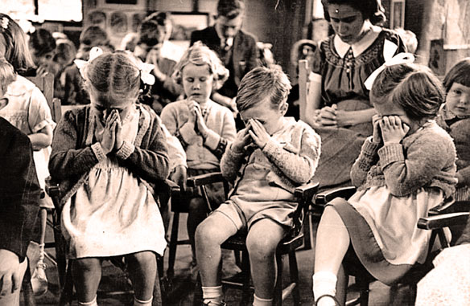
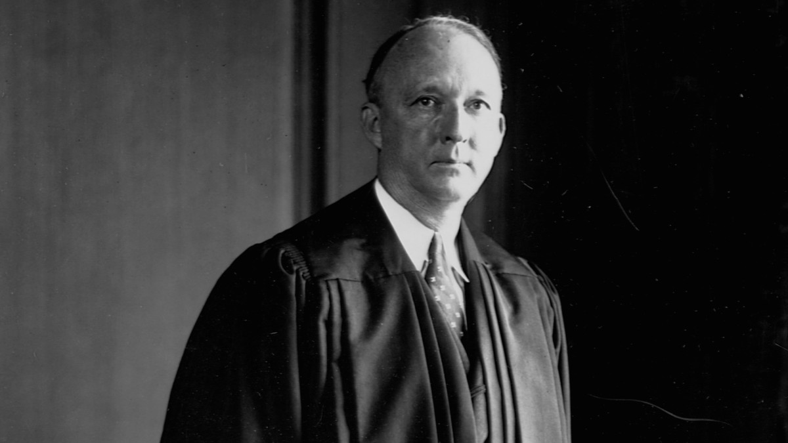

Supreme Court: Engel v. Vitale |
||
Home |
Sources |
Quiz |
IntroductionIn 1962 Engel v. Vitale was a Supreme Court case that stated that religious prayers and the encouragement of recitation within schools was unconstitutional and a violation of the first amendment. This was due to The Union Free School District in New Hyde Park, NY’s decision to start each day with the Pledge of Allegiance and a prayer that reads, “Almighty God, we acknowledge our dependence upon Thee, and we beg Thy blessings upon us, our parents, our teachers and our Country.” recognizing dependence upon God.While students were not required to participate, many still believed that forcing prayer upon children was a violation of the First Amendment mainly because the First Amendment was to prevent government interference with religion and states “Congress shall make no law respecting an establishment of religion.” Many of those who voted recognized the importance of religion and that religion varies from person to person. The petitioners say that this violation results in a breach of separation of church and state, and that it must be struck down because it was composed by governmental officials in efforts to further specific religious beliefs. Therefore, it would be wrong to impose specific religious acts in public schools where there are many different cultures and beliefs. Results of The CaseThe case was lost to the Supreme Court of New York in 1959, the Appellate Division of the Supreme Court of New York in 1960, and the Court of Appeals of New York in 1961. The reasoning was that they did not view the prater practice as an official religion. This led to Engel submitting an appeal to the U.S Supreme Court which ruled in a 6-1 vote. Justices Felix Frankfurter and Byron R. White did not participate in this ruling. Justice Hugo L. Black, shown above, based his reasoning around the history of religious discrimination back to the early days of our country. Black failed to use a single U.S Supreme Court case in his opinion, but did cite Everson v. Board of Education in one footnote. Justice Douglas argued in his concurrence that any promotion of religion that is public including but not limited to giving religious schools money would be a violation of the Establishment Clause. On the other hand, Justice Stewart explained in his dissent that the Establishment Clause was only meant to prohibit a state-sponsored church and not prohibit the government's involvement with religion altogether. Black believed that “the First Amendment was added to the constitution to stand as a guarantee that neither the power nor the prestige of the Federal Government would be used to control, support, or influence the kinds of prayer the American people can say.” He also believed that the government should not be involved in the writing or sanctioning of religious prayers, and instead allow those who practice the religion to create writings etc. The results of this decision was outrage among much criticism, even leading to threats and unsolicited phone calls to Engel and his family. This decision persuaded the Court to rid of similar school sponsored prayers in cases like Abington School District v. Schempp and Murray v. Curlett (1963). The principles of Engel have been used in other Court divisions such as an Alabama law that turned a moment of silence into a moment where prayer is encouraged which is the case of Wallace v. Jaffree (1985), a middle school graduation prater in Lee v. Weismann (1992), and prayers that take place at high school football games in Santa Fe Independent School District v. Doe (2000 | ||